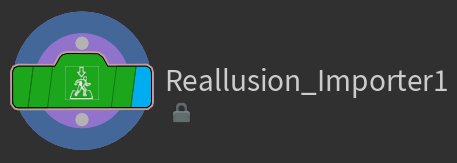
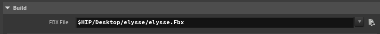
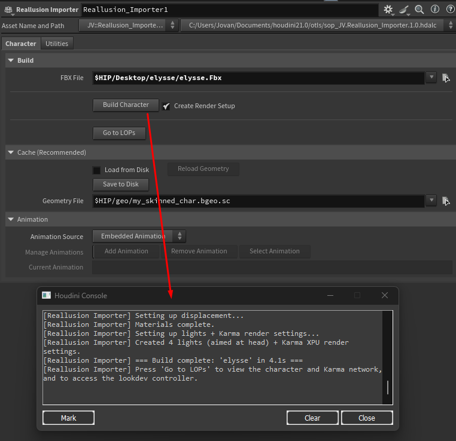
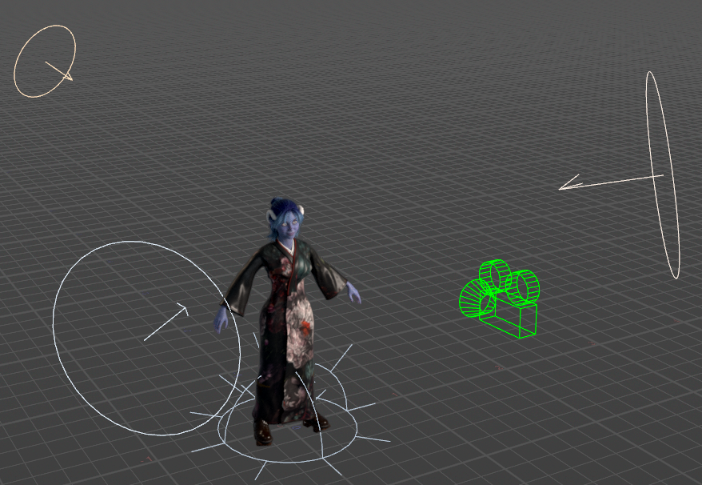

Quick Start
This page gets you from a fresh Houdini scene to a shaded, rendered character in about five steps. We'll keep it simple here — every control is explained in depth later in the Using the Asset section.
Before you begin
Make sure your character is exported from Character Creator correctly. The export settings genuinely matter — see Preparing Your Character first if you haven't already.
Step 1 — Create the node
Inside a Geometry object, press Tab, type Reallusion, and place a Reallusion Importer node.

Step 2 — Choose an import mode and point it at your file
At the top of the node is an Import dropdown. Leave it on USD (the default, and much faster) if you exported a USD file, or switch it to FBX for an FBX export. New to the two modes? See USD vs FBX.
Then set the file field the dropdown shows — CC5/iClone USD or CC5/iClone FBX — to your exported file.
Chasing the best look?
For animated characters, the best-quality path is an FBX import (for the expression wrinkles) driven by lightweight USD motion clips — see the best-quality workflow.

Keep your character's textures beside its file, exactly as Character Creator exports them — a Materials folder next to the .usd, or a textures folder next to the .fbx. The tool resolves them relative to the character file.
Step 3 — Build the character
Click the Build Character button.
The tool will now import the character, build all of its materials, set up displacement and wrinkles where the character supports them, and create a look controller. On a heavy or HD character this can take anywhere from a few seconds to a couple of minutes — the progress bar at the bottom of the Houdini window shows what it's doing.

In FBX mode the first build is the slow part, because Houdini has to load and expand the FBX (subsequent look changes are fast). In USD mode import takes about a second even on heavy characters — this is the main reason USD is the default. See Performance & Caching for details.
Step 4 — Look at your character
Your character is now built in Solaris (Houdini's /stage context). Click the Go to LOPs button on the node to jump there, then set up a viewport with a Karma render to see it.
If you'd like an instant lighting and camera setup, see Rendering — the tool can build a three-point light rig, a camera, and Karma render settings for you.

Step 5 — Art-direct the look
Find the bright red controller node in the LOP network (or click Go to LOPs to get there). This node holds every look control: skin, wrinkles, eyes, hair, and more. Adjust a slider or color and the Karma render updates live.

That's the whole workflow. From here, explore the Lookdev Controller to learn what every control does — or just start dragging sliders and watching what happens.
What next?
- Want to recolor the hair? See Hair.
- Want glowing eyes? See Eyes.
- Adding animation? See Animation.
- Something not working? See Troubleshooting & FAQ.